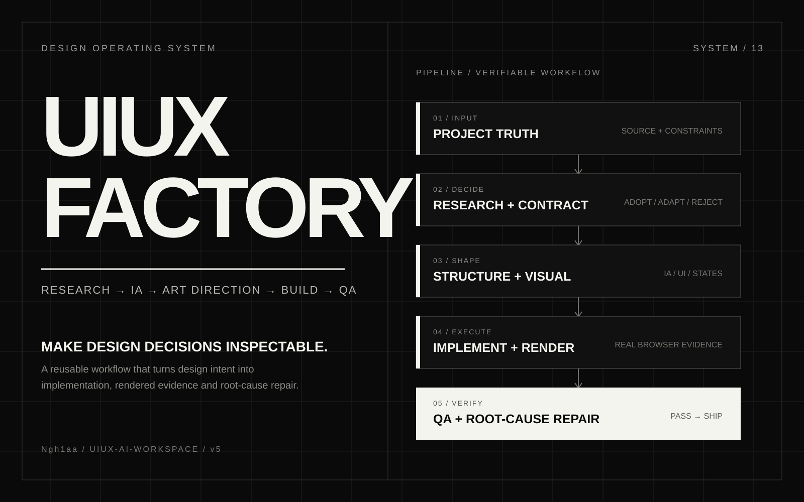

AI & PRODUCTIVITY
UIUX Factory
Make AI-assisted design work traceable through a brief, design decisions, reusable components and browser checks.

A workflow for design engineering
UIUX Factory is the working name for the design method and toolkit published as UIUX AI Workspace. It brings briefs, design-system patterns and verification tools into a versioned repository.
Make design decisions traceable
When implementation moves quickly, decisions and evidence can become difficult to trace. The toolkit gives a team a shared route from brief to review.
Designers and design engineers
The repository is designed for people moving between interface design, implementation and QA. It is an open-source toolkit with documentation and examples.
Evidence lives in the repo
The repository documents foundations, design tokens, benchmarks and release checks. The separate design-governance note explains where human ownership sits in the workflow.
Route the work by scope
Start with the brief, select a workflow size, read the required skill and checklists, then use the design-system patterns and verification appropriate to the surface.
Brief to checked implementation
Record context → define the flow → make design decisions → build using tokens and components → inspect the result in a browser → record remaining evidence gaps.
Separate design judgment from automation
The work separates reusable instructions, component contracts and automated checks so each can change independently. The checks verify their own scope.
Repository evolution
The README records earlier automation and the move toward a smaller toolkit centered on design practice, reusable assets and verification.
Toolkit outputs
The source contains token definitions, examples, checklists and runnable checks. The cover is a project graphic.
Browser examples and component states
The examples document state and responsive behavior. The design-system workflows exercise renders across browser engines.
Verification scope
The repository publishes foundation and release-candidate workflows. Its verification is useful for inspecting implementation and design-system coverage.
Limits and next steps
The toolkit demonstrates repeatable design engineering. Project-specific outcomes and review decisions need evidence from each project.